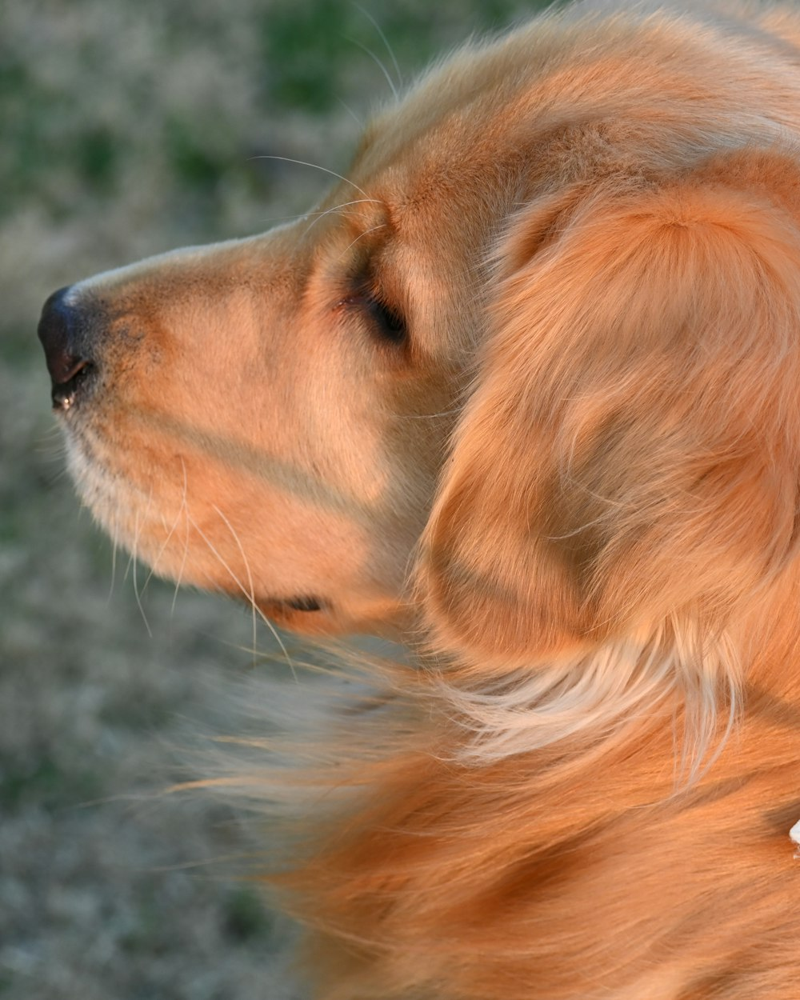
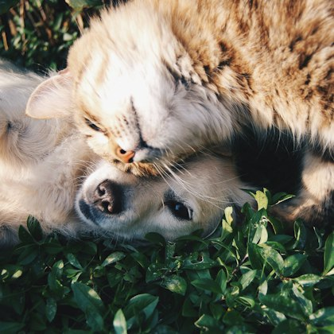

Adoção responsável e acessível
Todo bicho merece um lar sem barreiras.
O Sem Barreiras Pet aproxima você de cães e gatos resgatados por ONGs e abrigos, com todas as informações de saúde às claras e um site pensado para ser usado com leitor de tela, só com o teclado ou do jeito mais confortável para você.
- Etapas até a adoção
- 4
- Meta de acessibilidade (WCAG 2.2)
- AA
- Status da acessibilidade
- Em evolução


Ficha completa
vacinas, saúde e história
- Ficha de saúde completa
- Carteira de vacinação visível
- Visita agendada com o abrigo
- Navegação pelo teclado
- Compatível com leitor de tela
- Linguagem simples
- Acompanhamento após a adoção
Conheça os companheiros
Esperando por alguém como você.
Consultando animais disponíveis para visitas.
Para todas as pessoas
Um site pensado para todos.
Acreditamos que adotar deve ser simples para qualquer pessoa. A acessibilidade deste site está em evolução, seguindo a WCAG 2.2 nível AA. Nosso cuidado inclui:
- Navegação pelo teclado, sem precisar do mouse.
- Estrutura pensada para leitores de tela.
- Textos em linguagem simples e direta.
- Contraste de cores adequado para baixa visão.
- Formulários sem tempo limite e com instruções claras.